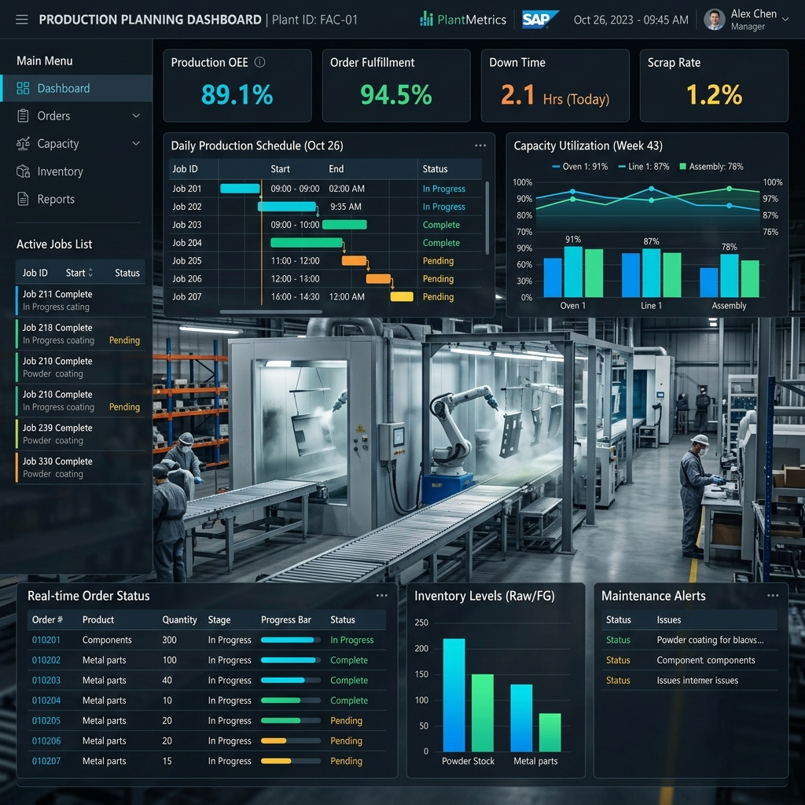

Operatív Termeléstervezés
Folyamatmérnöki Fejezet
A folyamatmérnök (Process Engineer) a gyártósorok "karmestere", akinek elsődleges célja a termelési folyamatok hatékonyságának maximalizálása és a veszteségek (Muda) eliminálása. A modern gyártási környezetben a folyamatmérnök híd a fejlesztés (R&D) és a napi operáció között, biztosítva a zökkenőmentes termelést.
A legfontosabb mérőszám az OEE (Overall Equipment Effectiveness), amely a rendelkezésre állás (Availability), a teljesítmény (Performance) és a minőség (Quality) szorzata. A folyamatmérnök feladata, hogy a gépleállásokat (Downtime), a sebességveszteségeket és a selejtet folyamatosan mérje, elemezze, és javító intézkedéseket (Kaizen) indítson a mutatók növelése érdekében.
Ciklusidő és Takt Time: A gyártósort a vevői igényekhez (Takt Time) kell igazítani. Ennek eléréséhez elengedhetetlen a sor-kiegyenlítés (Line Balancing / Yamazumi). A folyamatmérnök stopperrel (vagy modern kamera-rendszerekkel) méri a műveleti időket, azonosítja a szűk keresztmetszeteket (Bottleneck), és újraelosztja a feladatokat a munkaállomások között, hogy mindenki közel azonos leterheltséggel dolgozzon.
Az Értékáram-térképezés (Value Stream Mapping - VSM) a makro folyamatok optimalizálásának eszköze. A jelenállapot (Current State) felmérése után a mérnök egy jövőállapotot (Future State) tervez, amelyben minimalizálja az anyagmozgatási és várakozási időket (Lead Time). A Spagetti-diagram használatával a fizikai bejárási utak rövidíthetők, optimalizálva a Layout-ot (üzemi elrendezést).
A Standard Work (Szabványosított Munka) a folyamatstabilitás alapja. A folyamatmérnök vizuális SOP (Standard Operating Procedure) dokumentumokat, hiba-ellenőrző listákat készít, és biztosítja, hogy minden operátor pontosan ugyanabban a ritmusban és minőségben végezze el a rábízott feladatot. Szoros a kapcsolat az Ergonómiával is: a munkaállomásokat úgy kell kialakítani (pl. emelők, megfelelő világítás), hogy a fáradás és a munkahelyi sérülések esélye minimális legyen.
Gyors átállás (SMED - Single-Minute Exchange of Die): A rugalmas gyártás kulcsa, hogy a termékváltások a lehető legkevesebb állásidővel járjanak. A belső (csak álló gépnél végezhető) lépéseket külső (járó gép mellett végezhető) előkészítő lépésekké kell alakítani, amivel az átállási idő gyakran a töredékére csökkenthető, növelve a kapacitást.
Az NPI (New Product Introduction) és DFM (Design for Manufacturing) során a folyamatmérnök már a tervezőasztalnál beavatkozik. A cél, hogy az új termék könnyen gyártható (szerelhető Poka-Yoke elemekkel) legyen. A minőségüggyel szorosan együttműködve részt vesz a PFMEA (Process FMEA) elkészítésében, ahol a gyártási folyamat kritikus pontjait értékelik, és hibamegelőző lépéseket (pl. szenzoros ellenőrzés) építenek be.
Napjainkban az Ipar 4.0 és automatizáció a legfőbb irányvonal. A cobotok (kollaboratív robotok) integrálása az ember mellé, az AGV-k (Automated Guided Vehicles) bevezetése a logisztikába, vagy az IoT (Dolgok Internete) alapú valós idejű adatgyűjtés (MES rendszerek) hatalmas lehetőségeket biztosítanak. A sikeres folyamatmérnök interjún a logikus gondolkodás, a fizikai terek gyakorlati átlátása és az adatalapú elemző képesség bemutatása a kulcs.
Termeléstervező Feladat- és Munkakör
A termeléstervező szerepköre a hajszárító gyártás során egy kritikus koordinációs pont, ahol a precíziós összeszerelés találkozik a logisztikai optimalizációval. Feladata nem csupán a gépek beosztása, hanem a teljes ellátási lánc dinamikus menedzselése a gyáron belül.
A munkafolyamat a hosszú távú igények elemzésével kezdődik (Master Production Schedule - MPS). A tervezőnek látnia kell, hogy a következő negyedévben hány hajszárító egységre lesz szükség, és ez alapján kell meghatároznia az előgyártási szinteket. Mivel nagymértékű termelésről beszélünk, minden egyes munkafázis szinkronizálása elengedhetetlen a targoncás és békás raktár és a szerelősorok között.
A napi rutin része a targoncás raktár koordinációja is. A raktári operátorok az NAV-tól kapják a lehívásokat (Pick orders). Ha a tervező rosszul ütemezi a prioritásokat, a szerelősor alkatrészre várva állhat, ami óránként jelentős veszteséget termel. Folyamatosan egyeztetni kell a karbantartó cSAPattal is, hogy a tervezett gépleállások (Preventive Maintenance) ne ütközzenek a kiemelt vevői rendelések teljesítésével.
Részletes Tevékenységi Lista:
- Ütemezés: Napi és heti gyártási tervek készítése a kapacitás és alapanyag rendelkezésre állás függvényében.
- Batch-képzés: A galvanizáló és marató üzem hatékonyságának maximalizálása azonos technológiai igényű darabok sorolásával.
- Raktárkoordináció: A targoncás kiszedési sorrend finomhangolása a szerelősorok valós idejű igényeihez.
- Kommunikáció: Állandó kapcsolat a beszerzéssel, logisztikával és a gyártásvezetőkkel a váratlan események (pl. alapanyag hiány vagy gépmeghibásodás) kezelésére.
- Folyamatfejlesztés: A gyártási átfutási idők (Lead Time) elemzése és javaslat tétele a szűk keresztmetszetek feloldására.
- Adatkezelés: A darabjegyzékek (BOM) és művelettervek (Routing) pontosságának ellenőrzése az NAV-ban.
A tervező felelőssége kiterjed a Lean alapelvek betartatására is. A Just-in-Time (JIT) szemlélet jegyében törekedni kell a minimális félkésztermék (WIP - Work in Progress) készletre, ugyanakkor rugalmasnak kell maradni a hirtelen változó vevői igények kiszolgálására. Ez a kettősség teszi a szakmát valódi kihívássá.
NAVision (NAV) Rendszer Alkalmazása
NAVision Gyorsbevezető Termelésirányítóknak
A Microsoft Dynamics NAV (korábban Navision) egy rendkívül rugalmas és átfogó vállalatirányítási (ERP) rendszer, amely kiemelkedő gyártási, logisztikai és pénzügyi modulokkal rendelkezik. A szoftver alapfilozófiája az integráltság: minden tranzakció valós időben frissíti a készletnyilvántartást és a főkönyvet, biztosítva a teljes átláthatóságot a termelési lánc minden szintjén. A dinamikus felépítés révén az adatok azonnal rendelkezésre állnak az operatív döntésekhez.
A termelésirányítási modul központi eleme a Gyártási Rendelés (Production Order). A NAV-ban egy rendelés több állapoton mehet keresztül (Tervezett, Határozottan tervezett, Kibocsátott, Befejezett), ami lehetővé teszi a termelésirányítók számára, hogy pontosan nyomon kövessék, melyik fázisban van a termék. A rendszer segít a szűk keresztmetszetek azonosításában és a kapacitások optimális kihasználásában a "Routing" (műveletterv) és "BOM" (darabjegyzék) integrációja révén, mindezt átlátható táblázatos nézetekkel támogatva.
A NAV rendszer főbb funkciói és pillérei:
- Cikk-kártyák (Item Cards): A mesteradatok központja. Itt definiálható az összes alapanyag, félkész- és késztermék paramétere, beleértve a beszerzési és tervezési (MRP) szabályokat, biztonsági készleteket és átfutási időket.
- Darabjegyzékek (Production BOMs): A termékek összetételének többszintű, precíz leírása. A NAV kezeli az alternatív darabjegyzékeket és a selejtezési százalékokat is, biztosítva a pontos anyagfelhasználást és a varianciák minimalizálását.
- Művelettervek (Routings): A gyártási folyamat lépései (operációk), a szükséges gépek és emberi erőforrások definiálása, valamint a beállítási (setup) és gyártási (run) idők rögzítése, ami elengedhetetlen a pontos költségszámításhoz.
- Tervezési Munkalap (Planning Worksheet): Az operatív tervezők legfontosabb eszköze. Az Anyagszükséglet-tervezés (MRP) és Kapacitástervezés (CRP) itt fut le, automatikus javaslatokat adva beszerzésre, átmozgatásra vagy új gyártási rendelések indítására.
- Kapacitástervezés: Munkaközpontok (Work Centers) és Gépcsoportok (Machine Centers) terhelésének vizuális és adatalapú figyelése a naptárak alapján, megelőzve a túlterhelést vagy a gépek üresjáratát.
A NAV használata során kiemelt jelentőségű a Fogyás és Kibocsátás naplózása (Consumption and Output Journals). Ez az a kritikus lépés, amikor a fizikai anyagmozgások és az elkészült darabszámok bekerülnek a rendszerbe. A "Backflushing" (utólagos készletcsökkentés) funkció segítségével az alapanyagok levonása automatizálható a késztermék lejelentésekor, ami drasztikusan csökkenti az adminisztrációs terheket a szerelősoron, és kizárja az emberi hibafaktor jelentős részét.
A szoftver egyik legnagyobb előnye a testreszabhatóság és a Windows-os logikára épülő, rendkívül felhasználóbarát felület. A Szerepkör-központok (Role Centers) biztosítják, hogy a termelésirányító belépéskor azonnal lássa az aktuális műszak legfontosabb teendőit, a késedelmes rendeléseket és a kritikus készlethiányokat mutató csempéken keresztül. Ezen felül a NAV beépített szűrőrendszere és azonnali Excel export funkciója napi szinten órákat spórol meg az aggregált riportok elkészítése során.
A rendszer továbbá integrált minőségügyi és nyomonkövetési (Tracking) funkciókkal is rendelkezik. A Sarzs- és Sorozatszám kezelés (Lot and Serial No. Tracking) révén minden egyes beépített komponens útja pillanatok alatt visszakereshető a beszállítótól a végső vevőig, ami elengedhetetlen a hajszárító gyártás szigorú minőségbiztosítási követelményeinek teljesítéséhez, és a gyors visszahívási protokollok támogatásához.
Gyakori NAV Funkciók és Modulok Termelésben:
Firm Planned Prod. Orders - Határozottan tervezett gyártási rendelések véglegesítése
Released Prod. Orders - Jelenleg futó, aktív gyártási utasítások kezelése
Planning Worksheet - MRP futtatás és igények kalkulációja
Output Journal - Késztermékek és selejt lejelentése (Kibocsátás)
Consumption Journal - Alapanyagok kézi levonása a raktárból
Capacity Ledger Entries - Gép- és emberi erőforrások rögzített időráfordításai
Warehouse Pick - Komissiózási utasítások a targoncás raktár felé
A NAV-ban történő precíz munkavégzés nem csak a gyártás folytonosságát garantálja, hanem a vállalat pénzügyi stabilitásának is alapja, hiszen a rendszer a háttérben minden raktári és termelési mozgást azonnal értékeli és lekönyveli, tökéletes szinergiát teremtve az operáció és a menedzsment között.

Minőségügyi Reklamációk Kezelése
A nagyszériás gyártásnál elkerülhetetlenek a hibák, de a tervező feladata ezek hatásának minimalizálása az operációra. A minőségügyi visszacsatolás az NAV QM (Quality Management) modulon keresztül érkezik.
Példa reklamációra: Ha a maratás utáni vizuális ellenőrzésnél foltos felületet találnak, egy QM értesítést (Quality Notification) hoznak létre az NAV-ban (QM01). A tervező feladata ekkor:
- Azonnali készletzárolás az MB1B / 344 mozgásnemmel, hogy a gyanús alkatrészek ne kerüljenek a szerelősorra.
- Új gyártási rendelés (Rework Order) beillesztése a tervbe a selejt vagy javítás pótlására.
- A gyártási terv átütemezése: ha egy teljes batch hibás, más típusú termékeket kell előrehozni, hogy a gépsorok ne üljenek üresen.
A reklamációkból származó adatokat a tervező felhasználja a "Safety Stock" (biztonsági készlet) felülvizsgálatakor. Ha a alkatrész gyakran hibásodik meg a galvanizálás során, érdemes több tartalékkal tervezni, hogy ne álljon le a végszerelés. A cél a vevői elégedettség és a gyártási folyamat folytonossága közötti egyensúly megőrzése.
Riportálás, Jelentések és KPI-ok
A termelés hatékonyságát mérhető adatokkal kell igazolni. A tervező napi, heti és havi jelentéseket készít a felsővezetés számára, amelyek alapja a tiszta és validált adatsor.
A jelentések alapja az NAV-ból exportált adathalmaz, amit gyakran PowerBI rendszerben vizualizálnak. A tervező elemzi a tervezett és tanúsított idő (Standard vs. Actual time) közötti különbségeket. Ha a galvanizáló üzemben a sorváltások túl sok időt vesznek el, azt a riportban jelezni kell, és javaslatot kell tenni az ütemezés optimalizálására. A KPI-ok nem csak számok, hanem a jövőbeli beruházások és fejlesztések alapkövei.
Műszakátadás és Operatív Kommunikáció
A 24/7-es gyártási ciklusban a műszakátadás (Shift Handover) a folyamat legkritikusabb pontja. A tervező felelős azért, hogy a következő műszak pontosan tudja, hol tart a galvanizáló sor, és melyik high-priority (magas prioritású) rendelésnek kell elkészülnie reggelre.
Kommunikációs protokoll: Minden műszak végén a tervező frissíti az operatív műszaki naplót, amely tartalmazza a váratlan gépleállásokat, az alapanyag fogyásokat és a minőségügyi incidenseket. Ez biztosítja, hogy a termelési láncban ne keletkezzen információs rés.
A tervezőnek emellett szorosan együtt kell működnie a műszakvezetőkkel, hogy a valós idejű emberi erőforrás kapacitás (pl. váratlan hiányzás) esetén azonnal módosítani tudja a napi tervet az NAV-ban. A proaktív kommunikáció csökkenti a stresszt a gyártósoron és növeli a dolgozói elégedettséget.
Minőségügyi Mérnök Interjú Felkészülés
Az autóipari és nagyszériás gyártási környezetben zajló Minőségügyi Mérnök interjúk során a szakmai alapfogalmak magabiztos ismerete a siker kulcsa. Alapvető az ISO 9001:2015 és az autóspecifikus IATF 16949:2016 szabványok ismerete, kiemelten a PDCA ciklusra, a folyamatszemléletre és a kockázatalapú gondolkodásmódra.
A Core Tools (Alapeszközök) ismerete kötelező: az APQP (Termékminőség-tervezés) folyamata, az 5 fázis mérföldkövei, valamint a PPAP (Termék- és gyártási folyamat jóváhagyási eljárás) dokumentációs csomagja (PSW, Control Plan, Flowchart, Lab report). Készüljön fel a submission szintek (Level 1-5) közötti különbségek magyarázatára.
A FMEA (Hiba mód és hatás elemzés) kapcsán ismernie kell a kockázatértékelés módszertanát (Súlyosság, Előfordulás, Észlelhetőség), és az AIAG-VDA harmonizált szabvány szerinti Action Priority (AP) táblázatok használatát. Fontos megkülönböztetni a DFMEA-t (Tervezési) a PFMEA-tól (Gyártási), utóbbinál fókuszálva a folyamatlépések technológiai kockázataira.
Problémamegoldás terén a 8D módszertan a sztenderd: a D3 (Containment) azonnali intézkedések, a D5/D6 gyökérokok feltárása és a helyesbítő intézkedések bevezetése, valamint a D7 (Preventive) megelőzés rendszer szinten. A gyökérokelemzéshez használja a 3x5 Miért (Occurrence, Escape, Systemic) és az Ishikawa (szálka-diagram) módszereket.
Statisztikai téren az SPC (Statisztikai folyamatszabályozás) eszköztára elengedhetetlen: folyamatképességi mutatók (Cp, Cpk, Pp, Ppk) értelmezése, szabályozókártyák (X-bar, R) kiértékelése és a speciális hibaokok (trendek, eltolódások) felismerése. Az MSA (Mérőrendszer elemzés) keretében tudja magyarázni a Gage R&R (Ismételhetőség és Reprodukálhatóság) fontosságát.
A mérnöki rajzolvasás és a GD&T (Geometriai méretezés és tűrésezés) alapjai szintén kritikusak. Ismerje a mérőeszközök használatát (tolómérő, mikrométer, 3D CMM alapok) és a kalibrálási lánc fontosságát. A reklamációkezelés során (Customer claim) fontos a vevői portálok (SupplyOn, NAV) rutinszerű kezelése és a válaszadási határidők (24h/14 nap) szigorú betartása.
Módszertani szinten legyen tisztában a Lean (Muda, 5S, Kaizen) és a Six Sigma (DMAIC) folyamatfejlesztési alapelveivel. A hibázásmentes gyártás érdekében kiemelten kezelje a Poka-Yoke (error-proofing) megoldások tervezését és validálását a gyártósori munkahelyeken.
Végül, az auditálási tapasztalat (Belső, Vevői, Tanúsító) és a VDA 6.3 szerinti folyamatauditok ismerete nagy előnyt jelent. Készüljön fel konkrét példákkal a nem-megfelelőségek (NCR) kezelésére és a hatékonyság-ellenőrzési módszerekre. Az interjún a proaktív, adatalapú döntéshozatal és a rendszerszemlélet demonstrálása hozza meg a sikert.
Beszerzői Gyorstalpaló (Purchasing/Sourcing)
A beszerző (Buyer / Sourcing Specialist) az ellátási lánc kapuőre és a vállalat nyereségességének egyik elsődleges mozgatórugója. Feladata nem csupán a megrendelések leadása, hanem egy reziliens (ellenálló) és költséghatékony beszállítói bázis kiépítése. A direkt (gyártáshoz szorosan kötődő) és indirekt (üzemeltetési) beszerzések elkülönítése az első lépés ezen az úton.
A modern beszerzés legfontosabb koncepciója a TCO (Total Cost of Ownership - Teljes Birtoklási Költség) mérlegelése. Egy interjún kiemelten fontos hangsúlyozni, hogy nem csak a darabárat vizsgáljuk, hanem a szállítási díjakat, a minőségi kockázatokat, a vámokat és az adminisztratív terheket (pl. csomagolási visszáruk) is. Egy olcsóbb ázsiai beszállító a TCO alapján gyakran drágább lehet, mint egy helyi partner.
A beszállító-kiválasztási folyamat az RFI (Request for Information), RFQ (Request for Quotation) és RFP (Request for Proposal) hármasára épül. Az árajánlatok bekérése után a beszerző "Open Book" (nyílt könyves) ár-bontást is kérhet, ahol pontosan látja az alapanyag, a munkaerő és az árrés arányát. Ez a Cost Breakdown (Költségbontás) a sikeres tárgyalástechnika legfőbb fegyvere.
A beszállítói teljesítmény mérése kulcsfontosságú. Ezt jellemzően Beszállítói Értékelés (Supplier Evaluation) formájában végzik, ahol mérik a minőséget (PPM hibaarány), a szállítási pontosságot (OTD - On Time Delivery) és a kommunikációs hajlandóságot. A gyengén teljesítő partnereknél javító intézkedéseket (SCAR - Supplier Corrective Action Request) kell indítani.
A kockázatmenedzsment (Risk Management) manapság kritikus fókuszterület. A "Single Sourcing" (egy beszállító) kockázatos, ezért a beszerzők Dual Sourcing vagy Multi Sourcing stratégiákat dolgoznak ki a geopolitikai, időjárási vagy kapacitási kockázatok porlasztására. A biztonsági készletek (Safety Stock) méretezése egy folyamatos "kötéltánc" a tőkekötöttség és az ellátásbiztonság között.
Tárgyalástechnikai szempontból a BATNA (Best Alternative to a Negotiated Agreement) ismerete a legfontosabb: tudnunk kell, mi a legjobb alternatívánk, ha nem jön létre a megállapodás. A modern beszerző "Win-Win" szituációkra törekszik, például hosszútávú volumen-elköteleződésért (Blanket Order) cserébe árengedményt (Volume Discount) kérve.
Az IT rendszerek (ERP, főként NAV MM) használata a mindennapok része. Megrendelések létrehozása (PO - Purchase Order), készletlekérdezések, MRP (Anyagszükséglet-tervezés) futtatások mind a beszerző napi feladataihoz tartoznak. JIT (Just-in-Time) és JIS (Just-in-Sequence) beszállítások paraméterezése is szoros IT koordinációt igényel.
Az interjúra készülve elengedhetetlen a proaktív probléma-megoldási készség felmutatása. A "cost-down" (költségcsökkentési) projektek bemutatása, a nyersanyagipari trendek globális ismerete, valamint a határozott, de asszertív kommunikáció a győzelem kulcsa lehet.
Logisztikai Gyorstalpaló (Logistics/Supply Chain)
A logisztikus feladata az áruk és információk zökkenőmentes áramlásának (Material and Information Flow) biztosítása a beszerzési forrástól egészen a végső fogyasztóig. Két fő területe az Inbound (Bejövő) logisztika (alapanyagellátás) és az Outbound (Kimenő) logisztika (késztermék disztribúció).
A raktárgazdálkodás (Warehousing) a logisztika szíve. Az alapvető anyagmozgatási elvek a FIFO (First In, First Out) és a romlandó vagy lejárattal rendelkező termékek esetén a FEFO (First Expired, First Out). Ezek garantálják, hogy a régebbi készletek ne értéktelenedjenek el. A raktár Layout-jának megtervezésénél pedig az ABC-analízis segít: a legjobban forgó "A" típusú árukat a kapukhoz legközelebb eső "Hot Zone"-ba kell pozícionálni.
Felvevőpiaci és gyártási szempontból kiemelt fontosságú a készletoptimalizálás. A leggyakoribb KPI a Készletforduló (Inventory Turnover), ami megmutatja, hány alkalommal térült meg az év során a raktárban tartott készletünk értéke. Cél a készletszintek csökkentése anélkül, hogy az OTIF (On-Time In-Full), azaz a hiánytalan és időre történő szállítási mutató csorbát szemvedne.
A Szállítmányozás (Freight Management) egy külön "tudományág". Interjún elvárás az Incoterms (szállítási paritások, pl. EXW, DAP, DDP) pontos ismerete, amelyek tisztázzák a költségek és kockázatok átszállását a vevő és az eladó között. Ugyanilyen fontos az LTL (Less Than Truckload) és FTL (Full Truckload) fogalmak, vagy a tengeri szállítmányozás FCL/LCL konténer logisztikájának menedzselése.
A vállalaton belüli intralogisztikában (Intralogistics) a logisztikus irányítja a dolgozókat (targoncások, anyagmozgatók) és szervezi meg az alapanyagok gyártósori kijuttatását (Line-feeding). A Kanban-kártyás rendszer, a Milk-run (tejcsarnok-járat) koncepciók alkalmazása vagy a szupermarket hálózatok kiépítése tipikus Lean logisztikai feladatok a napi ügymenetben.
Folyamatos a kapcsolattartás az egyedi fuvarszervezőkkel (Freight Forwarders). Egy váratlan anyaghiány esetén Eszkalációs folyamatot indít: Prémium fuvart, "Time Critical" vagy "Air Charter" szállítást kell azonnal szervezni, megelőzve a teljes gyártósori leállást (Line stop), aminek percdíja többszöröse a prémium fuvardíjnak.
Nyomon követhetőség (Traceability) és egyedi azonosítás technológiái (Barcode, RFID rendszerek) szorosan összefüggnek az ERP rendszer logisztikai moduljaival (NAV WM/EWM). Ezen rendszerek ismerete nélkül a modern intralogisztika menedzselése lehetetlen.
A logisztikus interjún a fókusz a stressztűrő képességen van. Mindennaposak a válsághelyzetek, amikor a szállítmány késik. A munkáltatók olyan szakembereket keresnek, akik a Tűzoltás "Fire-fighting" mellett képesek stratégiában gondolkodni, és preventív megoldásokkal fejleszteni az ellátási láncot.